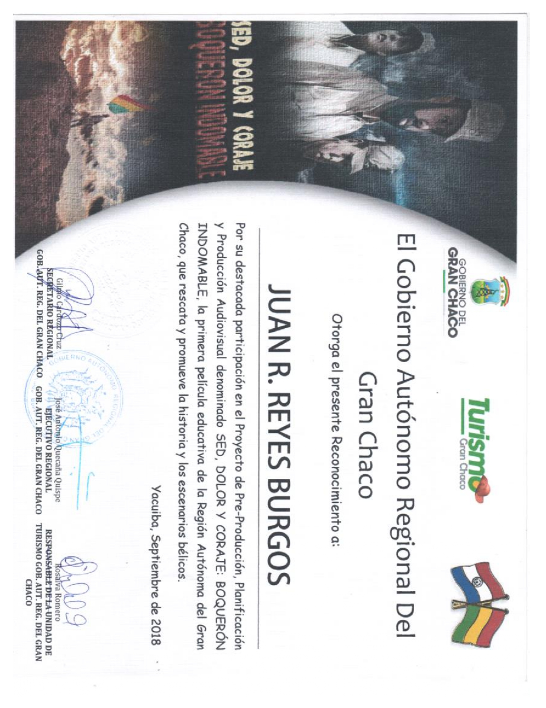

En sí la aplicación que desarrollé tiene el fin de ayudar en el área de la contabilidad, respecto a sacar cálculos del libro diario.
"Calculadora Contable"
Como su nombre lo indica, esta aplicación ayuda a calcular e identificar montos para libros diarios
La aplicación fue desarrollada a mediados del mes junio del 2023 y fue finalizada luego de una semana, la aplicación fue realizada en Android Studio
"FinanzApp"
Esta aplicación ayuda a calcular montos y asignar porcentajes a los asientos como puede ser: Caja, Banco, Cuentas Por Cobrar, Documentos Por Cobrar,
Cuentas Por Pagar, Documentos Por Pagar.
Certificados
En mis años de secundaria tuve el honor de participar en una película realizada por la Institución Educativa Bolivia

Aquí otros diplomas conseguidos a lo largo de mi vida en secundaria